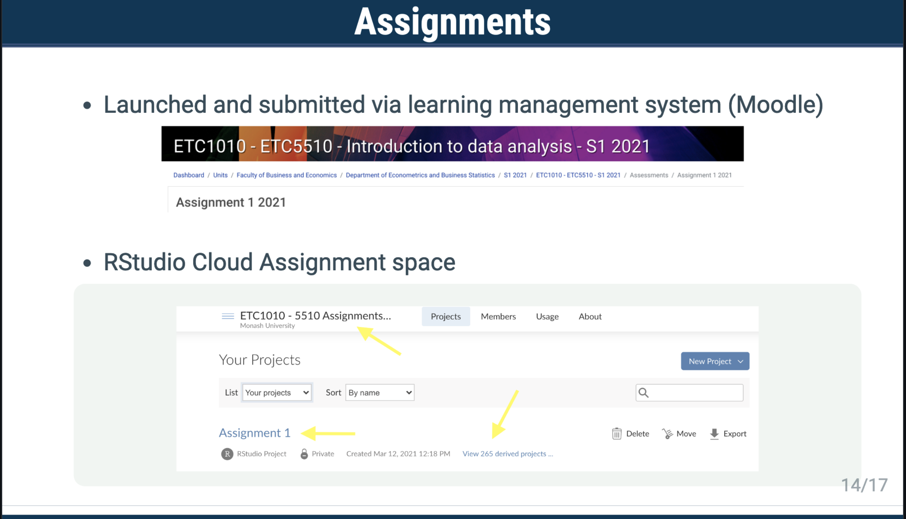

2022-04-04
Photo by Chris Montgomery on Unsplash
Data science and programming languages like R and Python are some of the most in-demand skills in the world. RStudio Cloud is a simple but powerful solution for teaching and learning analytics at scale. RStudio Cloud solves many of the technical and financial challenges associated with teaching data science. It’s also a joy to use for professors, students, and IT administrators.
Pete Knast hosted the RStudio Cloud Live Series to discuss approaches and tools for teaching in the cloud. These webinars were presented by Dr. Brian Anderson, Dr. Patricia Menéndez, and Dr. Mine Çetinkaya-Rundel.
We received many great pedagogical questions during the sessions. We also received inquiries about RStudio Cloud’s functionality and implementation. Below, we share insights from our presenters.
We also provide more information on RStudio Cloud for you to explore.
How do I get started with talking to my college dean and IT about the possibility of hosting RStudio Cloud? What was the budget approval process?
Dr. Menéndez: First, I wanted to see what RStudio Cloud could offer to the units I am teaching. I wrote a pros/cons document with the reasons and why it was worth investing in it. I discussed the functionality of the tool with the RStudio team. We also had a conversation with the IT team and we decided to use the server from RStudio Cloud.
I discussed with the RStudio team to see if the budget was aligned to what I needed, and then with the department head and the department manager. Finally, the department manager discussed the budget with the RStudio team.
I wonder about the partnership between administration, IT, and faculty. Our IT has limited ability to implement remote and cloud resources.
Dr. Anderson: This is where cloud solutions can be helpful. By minimizing the direct IT support on student machines, or in a lab space, cloud solutions should not add significantly to IT workload. Of course, how the school deploys the cloud solution is a variable in that workload, as is the extent to which the cloud solution integrates well with other IT platforms used for instruction.
Ideally, a cloud solution would be familiar to both faculty and IT, in the sense that the cloud version of the tool has a similar look and functionality as its desktop version, if applicable. Support agreements tied to licensing can also be a possibility, along with a robust help area for students to seek solutions to common software challenges. It is, though, critical for a new initiative to be either led by faculty or otherwise have significant faculty support.
Can RStudio Cloud integrate with my school’s existing authentication setup?
Pete Knast: Yes, depending on your school’s Single Sign-On setup, we can likely integrate with it. We’ve integrated with popular ones like Shibboleth, Google Auth, and SAML. If you’re using something else, let us know.
Could we see a demo of the rscloud package?
Pete Knast: The rscloud package is an API wrapper for the rstudio.cloud service. The initial release includes APIs for managing space memberships and listing projects within a space. You can see a demo of the package on our RStudio Cloud YouTube playlist.
Do students generally have any prior programming experience? Do you do a primer first with GitHub?
Dr. Menéndez: The students generally need to learn both R and GitHub. I teach them to use Git through both the command line interface and through RStudio. If you learn through the command-line interface, then you can use Git with other programming languages like Matlab or Python. As part of the course, students learn how to create a repository and how to store it in GitHub. I use RStudio Cloud for the first few weeks to get them familiar with R and RStudio. Once we start learning Git, I transition them to using RStudio installed locally on their machines.
I have found that teaching Markdown is the most difficult for students. How do you approach this?
Dr. Menéndez: Students struggle at the beginning with Markdown. First, I teach them about R and reproducibility. Then, we talk about integrating code with text to create a report. I introduce this sequentially so they understand why they need markdown and what the benefits are. In the reproducibility unit, we follow the same structure so that students without a lot of R knowledge are able to create reproducible reports using R and R Markdown while learning how to use Git and GitHub.
In the past, I’ve had students pick some dataset and by the end of the semester create a report based on their chosen dataset. Do you use the same dataset for your entire course?
Dr. Menéndez: For each lecture and assignment, we use different datasets. We may use the same dataset in different contexts, but in general, we use different real-life examples each time.
Can you speak more to teaching business students analytics? We are developing similar programs and need to differentiate them from data science.
Dr. Anderson: From my perspective, what differentiates business analytics from data science is context and workflow. When we think about using analytics to solve a business problem or inform a decision, communication is paramount to this process. What makes analytics useful in business is the ability to influence and persuade, which requires the analyst to have a deep understanding of the business context and the ability to communicate key insights in a clear and compelling way. As such, communication exists as coequal in workflow importance to, for example, modeling and data generation. Further, because of the nature of how we communicate in a business context, data visualization skills take on greater salience. To be clear, data science workflows also include context, communication, and visualizations. My argument is that a business analytics curriculum will place different emphases on workflow elements than would, potentially, a data science curriculum.
On the financial constraints of adopting private solutions, would you think it possible to teach how to do, e.g., financial analysis with R? What about employment opportunities with this route?
Dr. Anderson: Yes, I think R, particularly with additional tools like RStudio, could be extended to teach business fundamentals that are typically taught using MS Excel. The challenge, however, will be ensuring that business graduates, particularly in finance and accounting, also have excellent MS Excel skills. In that sense, leveraging R is best positioned as a complement to, and not a replacement of, MS Excel.
Does it make sense to use RStudio Cloud for the entirety of the course or to have students transition to local machines?
Dr. Çetinkaya-Rundel: That is a good question and it depends on the goals of your course. As someone who generally teaches introductory courses, I want students to understand that the “cloud” is not an esoteric thing — that it is actually somebody else’s machine. We want students to understand what it means for things to live on the cloud so if they start working on a project with sensitive data, they know they shouldn’t just upload it to RStudio Cloud without first making sure that it is okay.
If the goals of your course include software installation, then it makes sense to transition. One benefit of teaching installation later is that students are not both new to R and installation, so they can distinguish between an R error and an error due to their setup.
When people go on to do things past their university life, chances are they will continue to work in the cloud. A lot of academic computing happens on computing clusters. This notion of doing things on the cloud eases onboarding, but it is not just an unrealistic “baby steps” solution.
Dr. Menéndez: The students with no coding experience tend to be very nervous at the beginning. In addition to learning R, RStudio, and reproducibility, they also need to learn the command line interface and Git/GitHub. Using RStudio Cloud in the first four weeks makes it easy because students feel safe opening projects, running code, etc. They learn about version control and installing packages. After a few weeks, they feel very confident. Then, we slowly transition to the desktop.
Can you speak to your use of the functionality that allows you as the instructor to access the projects of the students?
Dr. Menéndez: This is a great feature from RStudio Cloud. I can click into a feature that lets me see all of the students’ projects. I can search for a specific student in the members’ space and then click on their project to open it. I’d prefer students create a reproducible example when they need help, but this gives me the flexibility to see what’s happening if a student is really stuck.

Is there a way to distribute data files to students without setting up a project?
Dr. Çetinkaya-Rundel: If you are not setting up a project, there isn’t necessarily an RStudio Cloud-specific solution. If you have access to a place to host your dataset, such as a GitHub repository, then you can read the files using the URL. If the goal is to teach students how to move files, then I provide instructions on how to download a dataset onto their computer and then upload it into RStudio Cloud.
How does RStudio Cloud scale (say, when you have a class of 30 students versus a class of 300)?
Dr. Menéndez: RStudio Cloud scales very well. You share the RStudio Cloud space for a unit with a link, so it doesn’t matter if you have 30 students or 300 students. They click the link to enter the workspace. The issue is when you are getting questions from 300 students, but that is more about content than the technology. For that, we open several Zoom channels where the students can seek help for technical issues if they arise. I communicate with my teaching associates via Slack so that the teaching team is all connected.
How do you handle grading?
Dr. Çetinkaya-Rundel: There isn’t a grading feature in RStudio Cloud but it is a feature request. If you’re not having students submit their work elsewhere (e.g., GitHub, or your school’s learning management system), I would recommend going into each project, creating a file for the feedback or leaving it inline, and recording grades in a separate CSV file you can upload to wherever you store grades.
Dr. Menéndez: I do not use something that integrates RStudio Cloud with LMSs. Students work on their assignments using RStudio Cloud and then they download their R studio projects into a ZIP folder. Afterwards, they upload the folder into the LMS system and share their project link. We mark the RStudio project and the knitted files and I provide students feedback via the LMS system.
Is it true you can access Jupyter Notebooks in RStudio Cloud?
Yes, this is still in Beta but you can request access if you have a paid plan. We will be transitioning to general availability later this year. Even if you do not have a paid plan and are interested in trying it out, send us an email and we can set you up.
How does RStudio Cloud differ from RStudio Server? Are there any additional benefits that RStudio Cloud may provide?
RStudio Cloud has a few features that don’t exist in other RStudio offerings, like the ability to create workspaces or assignments. RStudio Cloud is also a hosted SaaS offering so RStudio handles the infrastructure for you.
Where can one go to start experimenting with RStudio Cloud in our classrooms? Who should I email for practical steps?
You can send questions to sales@rstudio.cloud. To start experimenting, sign up for a free account here: https://rstudio.cloud/plans/free.
Is there an educator plan? I’m wondering how a large course (100+) can use RStudio Cloud given the limitations of workspaces and hrs/month.
The various paid tiers which are discounted heavily for educators don’t have any limitations on workspaces or hours. We have numerous degree-granting institutions that use RStudio Cloud for courses that cover hundreds and even thousands of students.
I’ve seen discounted academic licenses, but not free. Is this accurate?
There is a free license that anyone can use, even non-academics. There are also multiple types of discounts for academics depending on your use case, such as if you are an instructor at a degree-granting institution, academic researcher, TA, or student.
I was told last year by someone from RStudio that they were working on a collaboration feature in the RStudio Cloud. Is this feature going to be released soon?
Yes, we are hoping to have true collaborative editing much like you will find in a Google Doc or other RStudio offerings by the end of Q1 2022.
How does RStudio Cloud differ from RStudio Server? Are there limitations on the use of libraries or any other add-in that you would normally use on the desktop or server version? Are there any additional benefits that RStudio Cloud may provide over RStudio Server?
RStudio Cloud is different in that it offers additional capabilities so there are no real limitations. You can read more here:
We have a lot more to share:
Watch the presenters’ full recordings:
Find resources for the use of RStudio in education:
Read past blog posts on RStudio Cloud: